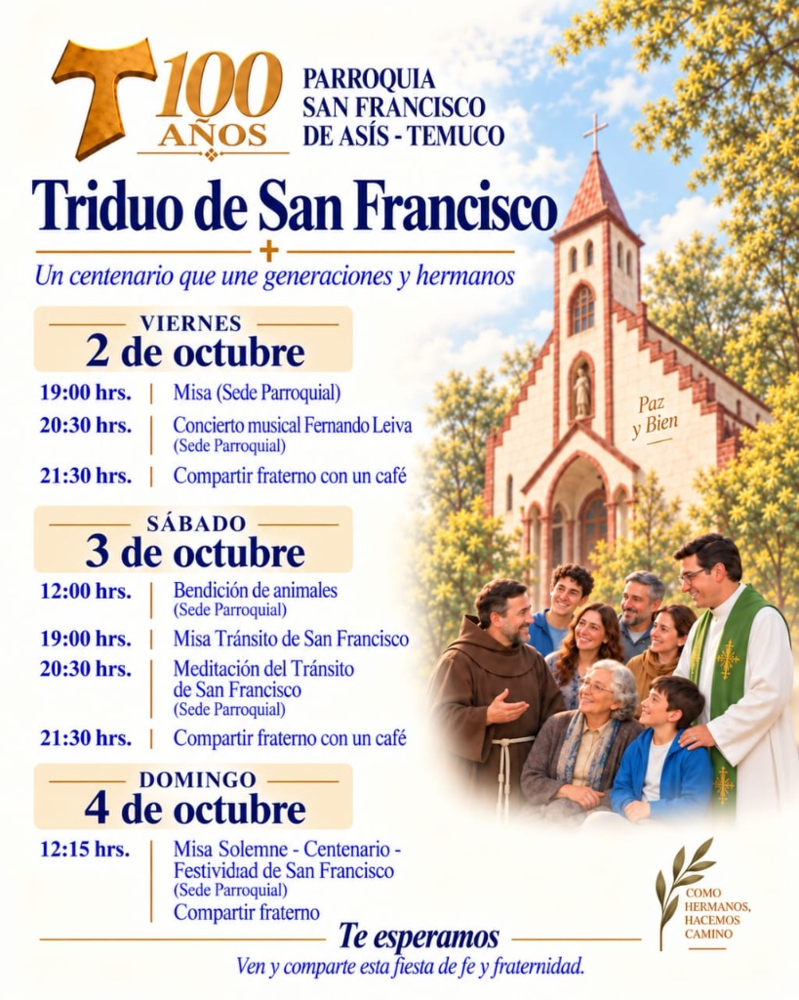

Programa del Centenario
SF100: Itinerario
Programa oficial de celebraciones del Triduo de San Francisco de Asís e hitos del Centenario (1926 - 2026).

Programa Triduo de San Francisco
"Un centenario que une generaciones y hermanos". Te invitamos a participar en todas las celebraciones en nuestro Templo Parroquial de Manuel Montt 39, Temuco:
📅 Viernes 2 de octubre
19:00 hrs.
Santa Misa (Sede Parroquial)
20:30 hrs.
Concierto Musical de Fernando Leiva (Sede Parroquial)
21:30 hrs.
Compartir Fraterno con un café para todos los asistentes
🐕 Sábado 3 de octubre
12:00 hrs.
Bendición de Animales y Mascotas (Sede Parroquial)
19:00 hrs.
Misa del Tránsito de San Francisco
20:30 hrs.
Meditación del Tránsito de Nuestro Padre San Francisco
21:30 hrs.
Compartir Fraterno con un café comunitario
🎉 Domingo 4 de octubre — Festividad del Centenario
12:15 hrs.
Misa Solemne de Centenario — Festividad de San Francisco de Asís (Sede Parroquial)
Al finalizar:
Gran Compartir Fraterno Parroquial